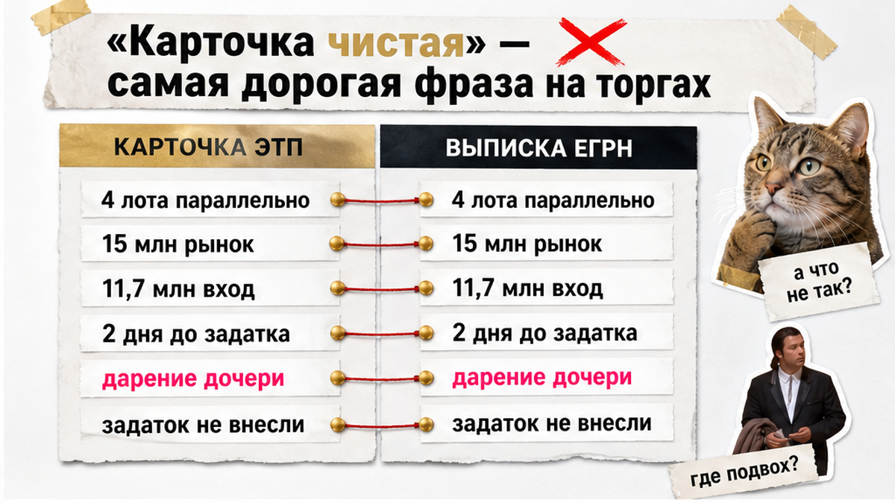
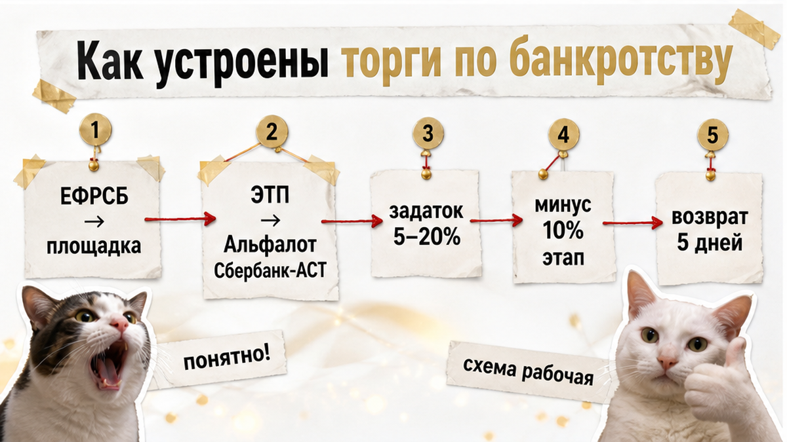
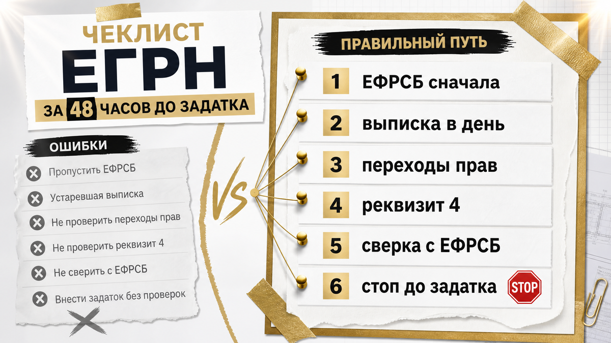
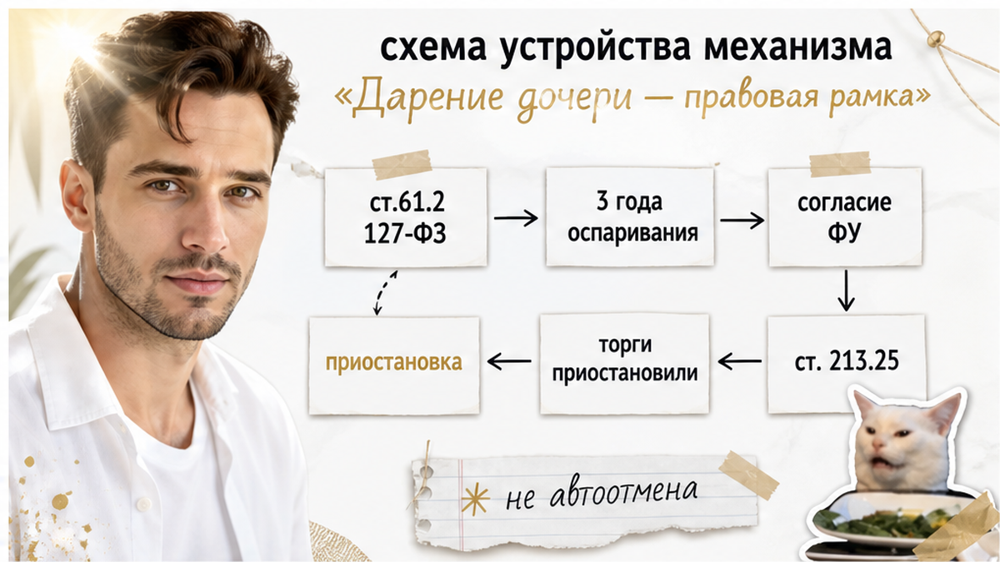
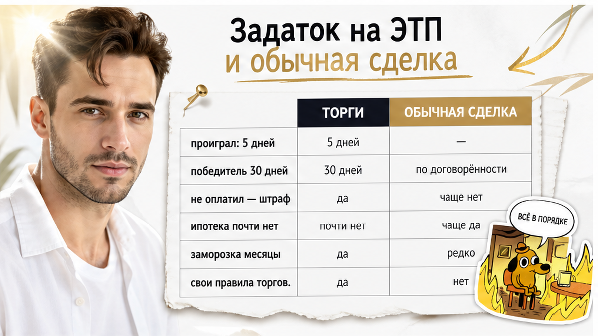
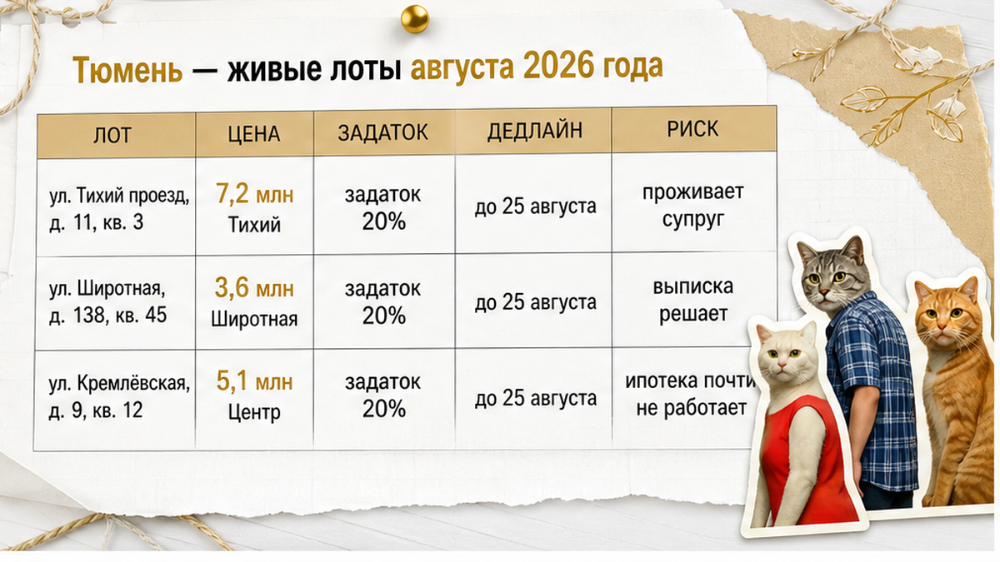

«Задаток почти готов, завтра переведём».
«А кто сейчас собственник в ЕГРН?»
Квартира на торгах в Тюмени выглядит спокойнее обычной вторички. Цена ниже рынка. Карточка на ЕФРСБ чистая. Финансовый управляющий на связи.
Между фразой «задаток готов» и свежей выпиской из ЕГРН может пройти два дня — и собственник уже другой.
Обычный человек видит скидку.
Риэлтор спрашивает:
«Когда последний раз менялся владелец?»
Я веду сделки в Тюмени от звонка до регистрации. На торгах по банкротству чаще всего слышу: «карточку уже смотрели, должник выписан».
Смотрели — но не в день задатка. И не раздел о переходе прав.
Расскажу, как это проверяют до внесения задатка на ЭТП — пока ещё можно уйти в другой лот без заморозки денег.
Быстрый инсайт. Карточка лота на торгах — не право собственности. Это снимок условий продажи, а не реестр. Свежую выписку ЕГРН заказывают в день проверки: за два дня до задатка в открытом кейсе увидели дарение дочери должника, оформленное примерно неделей ранее. Задаток не внесли, торги приостановили, дарение оспаривают. Выиграли другой лот из четырёх параллельных.
Я — Святослав Шакин, The Риэлтор в Тюмени. Лично веду сделку от звонка до регистрации.
Полный разбор кейсов и как я это ловлю до аванса — в Telegram и MAX. Напишите — подключусь.

«Ну там же всё чисто, зачем ещё раз ЕГРН?»
Потому что «чистая карточка» — состояние документа, а не объекта.
По публичному разбору кейса от 30 июля 2026 года одновременно смотрели четыре лота. Один объект оценивали по рынку примерно в 15 млн рублей, цена входа — 11,7 млн.
Первая проверка ничего не сломала. Должник выписан. Явных препятствий для участия не было. В деле фигурировал кредит на 8 млн рублей.
Спокойствие обманчиво.
За два дня до внесения задатка заказали свежую выписку из ЕГРН. Не потому что что-то насторожило — потому что так надо всегда перед деньгами на площадке.
Выписка показала: примерно неделю назад объект подарили дочери должника.
Пока считали дисконт, собственник у квартиры сменился.
Финансовый управляющий обеспечительные меры не принял. После обнаружения перехода права торги приостановили, дарение начали оспаривать.
Задаток по этому объекту не внесли. Выиграли другой лот — один из четырёх, которые вели параллельно.
Адрес недвижимости и ФИО участников в источнике не раскрываются.
Сам факт дарения родственнику не означает автоматическую и гарантированную отмену сделки. В этом кейсе результатом проверки стали приостановка торгов и начало оспаривания — не больше и не меньше.
Вердикт: карточка на ЕФРСБ не заменяет выписку в день задатка.

«Торги — это же как обычная покупка, только дешевле?»
Нет. Другая площадка, другие сроки, другие правила задатка.
Сообщения о продаже имущества должников публикуются в ЕФРСБ. Сами торги проходят на электронных площадках — в том числе на Альфалоте и Сбербанк-АСТ.
Если победитель отказывается оплачивать лот, задаток ему не возвращается.
Если торги приостановлены из-за обнаруженного дарения, внесённый задаток может оказаться заморожен на месяцы. В рассматриваемом кейсе как ориентир указывали возможность ждать до года — срок непредсказуем.
Ипотечных программ для покупки имущества на банкротных торгах почти нет. При этом скидка относительно рынка может составлять от 15% до 60%.
Обычный человек видит процент скидки.
Риэлтор видит сроки оплаты без ипотеки и спрашивает: «Деньги на счёте уже или только план?»
Вердикт: торги — не «дешёвая вторичка», а отдельная процедура со своими стоп-кранами.

«Выписку заказывали на прошлой неделе — зачем снова?»
Потому что переход права мог появиться вчера.
Читается за минуту. Решает, заморозите ли вы сотни тысяч на площадке.
Разборы похожих кейсов на торгах и ответы до задатка — в Telegram и MAX. Напишите — разберём ваш лот.
Если продавец или представитель действует по доверенности — это отдельный контур риска: доверенность не броня, когда собственника нет в городе.

«Ну раз подарили дочери — сделку же отменят?»
Не обязательно. Дарение близкому родственнику не означает автоматическую отмену сделки, но создаёт существенный риск её оспаривания.
Обычный человек ждёт готовый вердикт суда.
Риэлтор останавливает задаток и спрашивает: «Торги ещё идут или уже приостановлены?»
Практический вывод: недавнее дарение дочери — основание не для утверждения о стопроцентной отмене, а для приостановки решения о задатке и оценки процедуры оспаривания.
Вердикт: дарение — красный флаг, не готовый приговор. До денег на площадке — пауза.

«На вторичке же задаток всегда вернут, если банк отказал».
На торгах — свои правила. На вторичке — текст вашего договора. Путать опасно.
| Ситуация | Торги по банкротству | Обычная сделка |
|---|---|---|
| Проиграл аукцион | Возврат ~5 раб. дней (ст. 110) | Не применимо |
| Выиграл, не оплатил | Задаток не возвращается | Смотрят договор |
| Торги приостановлены | Деньги могут заморозиться | Отдельная процедура |
| Отказ банка в ипотеке | Ипотека почти недоступна | ВС 17.08.2026: смотрят текст договора |
До перечисления задатка нужно одновременно проверить свежую ЕГРН, статус торгов в ЕФРСБ и условия конкретной ЭТП. Если обнаружено недавнее дарение, риск двойной: спор о праве и возможная заморозка денег после приостановки торгов.
Вердикт: правила ЭТП не переносятся на предварительный договор автоматически.
Ошибка первая — проверять только карточку торгов.
Даже если в ЕФРСБ и на площадке нет явных проблем, перед задатком нужна свежая выписка ЕГРН. Переходы прав, реквизит 4, сверка с ЕФРСБ. Выписку лучше получать в день проверки.
Ошибка вторая — считать дарение гарантией отмены сделки.
По пункту 2 статьи 61.2 закона № 127-ФЗ сделка может оспариваться в пределах трёх лет, при передаче имущества родственнику действует презумпция. Учитываются пункт 13 позиции Верховного суда от 12.2026, согласие финансового управляющего по статье 213.25, возможность реституции и приостановки торгов. Но это не означает стопроцентной отмены.
Ошибка третья — вносить задаток до финальной сверки.
Размер обычно 5–20%. Проигравшему задаток возвращают в течение пяти рабочих дней по статье 110. Если победитель не заключил договор или не оплатил лот — задаток не возвращается. При приостановке торгов из-за дарения деньги могут оказаться заморожены.
Ошибка четвёртая — рассчитывать на обычную ипотеку.
На торгах ипотечное финансирование почти не встречается. Позиция Верховного суда от 17.08.2026 (смежный контекст — предварительный договор, не банкротные торги) подчёркивает: отказ банка в ипотеке сам по себе не означает автоматический возврат задатка — решающим является текст договора. Победителю на торгах дают пять дней на договор и до 30 дней на оплату.
Ошибка пятая — держаться за единственный объект.
Скидки на торгах могут составлять от 15% до 60%, но привлекательная цена не компенсирует юридический риск. На публичном предложении цена может снижаться на 10% за интервал по статье 110 — однако ожидание следующего этапа не отменяет проверку ЕГРН.
Уходить в другой лот разумно, когда перед задатком обнаружен свежий переход права, началось оспаривание или торги приостановлены.
Параллельная работа с несколькими объектами — не роскошь. Это способ не зависеть от одного сценария и не принимать риск только ради скидки.

Примеры из открытых карточек агрегаторов — не live-оферта и не приглашение к покупке.
«В Тюмени на торгах вообще что-то есть?»
Есть. Но карточка — только приглашение к проверке.
Все три строки ниже — пример из карточек агрегаторов, не live-оферта.
Задаток 20% от 7 236 000 — уже серьёзная сумма на счёте площадки. «Имущество третьих лиц» и «проживает супруг» — отдельные разговоры до перевода денег. Адреса и цены — пример из карточек агрегаторов, не live-оферта.
Вердикт: цена в объявлении манит. Выписка в день задатка — решает.
Для обычных сделок вне банкротных торгов может быть полезен отдельный материал: расписка и расчёт на вторичке.
Нет. Ранее заказанная выписка не показывает переход права, зарегистрированный после её получения. В открытом кейсе дарение дочери было оформлено примерно неделей ранее — и увидела его только выписка, полученная за два дня до задатка.
Точно — нет. Дарение родственнику создаёт существенный риск оспаривания: трёхлетний период по пункту 2 статьи 61.2 закона № 127-ФЗ, презумпция по родству, пункт 13 позиции Верховного суда от 12.2026, вопрос согласия финансового управляющего по статье 213.25. Результат в рассматриваемом случае — приостановка торгов и начало оспаривания, а не готовое решение.
Это нейтральный факт, который нужно оценивать отдельно. Само по себе отсутствие обеспечительных мер не устраняет риск оспаривания и приостановки торгов.
Проигравшему участнику задаток возвращают в течение пяти рабочих дней по статье 110 закона № 127-ФЗ.
Деньги могут оказаться заморожены на месяцы. В рассматриваемом кейсе как ориентир указывали возможность ждать до года — срок непредсказуем. Именно поэтому в открытом кейсе задаток по проблемному объекту не внесли.
Практически нет: ипотечных программ для покупки имущества на банкротных торгах почти не существует. При этом победителю даётся пять дней на заключение договора и до 30 дней на оплату.
Проверка не обещает, что суда не будет. Она обещает, что вы внесёте задаток с открытыми глазами — или уйдёте в другой лот до перевода денег.
Материал проверен: Святослав Шакин, личный риэлтор в Тюмени. Ориентир для покупателя, не индивидуальная юридическая консультация.